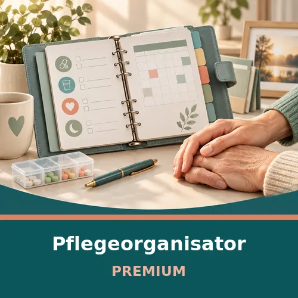

Konflikte lösen und Krisen meistern-Ruediger Dahlke-Hörbuch
Produktprofil · Marktplatz-Daten 2026-10-10 · Verkaufsseiten-Recherche 2026-10-10 · Kategorien: Family & Children, Personal Development
- Konflikte lösen und Krisen meistern-Ruediger Dahlke-Hörbuch ist ein/e Hörbuch (Download) in Family & Children und Personal Development, vertrieben über den Digistore24-Marktplatz von Anbieter isidde, gelistet seit 2023-10-23.
- Listenpreis $20.93; Digistore24 meldet — Checkout-Konversion, — Stornierungsquote und 50 % Affiliate-Provision.
- Verdienst pro Verkauf (Affiliate): $10.47 (Anbieter-seitige Statistik, keine Prognose).
Interesse an Konflikte lösen und Krisen meistern-Ruediger Dahlke-Hörbuch? Aktueller Preis, Boni und Garantiebedingungen finden Sie auf der offiziellen Seite des Anbieters:
Offizielle Verkaufsseite ansehen
Affiliate-Link (Werbung) — wir verdienen ggf. eine Provision, ohne Mehrkosten für Sie.
Marktplatz-Daten
| Produkttyp | Hörbuch (Download) |
|---|---|
| Preis | $20.93 (Single payment) |
| Affiliate-Provision | 50 % |
| Garantie/Rückgabe | Laut Verkaufsseite des Anbieters — vor dem Kauf auf der offiziellen Seite prüfen |
| Anbieter | isidde (gelistet seit 2023-10-23) |
| Marktplatz-Statistiken* | Checkout-Konversion — · Stornoquote — · Verdienst/Verkauf $10.47 |
* Anbieter-seitige Statistiken von Digistore24; sie hängen von der Traffic-Qualität ab und sind keine Prognose.
Marktplatz-Beschreibung des Anbieters
„Krisen gehören nun mal zum Leben.“ Wirklich? Was wäre, wenn wir die natürlichen Lebensübergänge wieder als solche sehen könnten – als normal, als Chance, Altes loszulassen und sich weiterzuentwickeln? Geburt, Pubertät, Berufseinstieg, Familiengründung usw., all das sind potenzielle Auslöser für Krisen in unserer sich immer schneller drehenden Welt. Oft klammert man sich an vermeintlich Sicheres, …
Von der Verkaufsseite des Anbieters
Seitentitel: Konflikte lösen und Krisen meistern: Rituale als Schlüssel - Ruediger Dahlke - Hörbuch-Download - Matthias Ernst Holzmann, isid.de - media production
Meta-Beschreibung: "Krisen gehören nun mal zum Leben." Wirklich? Was wäre, wenn wir die natürlichen Lebensübergänge wieder als solche sehen könnten – als normal, als Chance, Altes loszulassen und sich weiterzuentwickeln?
Hauptüberschrift
Konflikte lösen und Krisen meistern: Rituale als Schlüssel - Ruediger Dahlke - Hörbuch-Download
Abschnitts-Überschriften
- Persönliche Lebensübergänge meistern mithilfe der Kraft der Rituale
Einstiegstext
Cover: Umschlaggestaltung: Hauptmann & Kompanie Werbeagentur, Zürich unter Verwendung einer Bildlizenz von © Shutterstock
„Krisen gehören nun mal zum Leben.“ Wirklich? Was wäre, wenn wir die natürlichen Lebensübergänge wieder als solche sehen könnten – als normal, als Chance, Altes loszulassen und sich weiterzuentwickeln? Geburt, Pubertät, Berufseinstieg, Familiengründung usw., all das sind potenzielle Auslöser für Krisen in unserer sich immer schneller drehenden Welt. Oft klammert man sich an vermeintlich Sicheres, wehrt sich gegen unausweichliche Veränderungen – und verpasst den Entschluss, mutig selbst den nächsten Schritt zu tun.
Ruediger Dahlke, geboren 1951, studierte Medizin in München und bildete sich zum Arzt für Naturheilweisen und in Psychotherapie weiter. Seit 1978 war er als Psychotherapeut und ist bis heute als Fasten- und Seminarleiter international tätig. Anfang 2012 öffnete das von ihm gegründete Seminarzentrum TamanGa bei Gamlitz in der Südsteiermark als Ort der Regeneration, (Aus-)Bildung und Selbstfindung. Als Pionier der Ganzheitsmedizin ist Dahlke gefragter Experte für Ausbildungen. Viele seiner Bücher erreichten Bestsellerstatus.
Hörbücher , Politik und Gesellschaft , Psychologie, Persönlichkeitsentwicklung, Beratung , Tipps und Tricks
Recherche-Methode: rohes HTML · 956 Wörter · Qualität: rich · recherchiert am 2026-10-10. Vollständige Recherche-Datei (MD) ↗
Wie Produkte dieser Art geliefert werden
Allgemeiner Hinweis zu diesem Produkttyp (keine anbieterspezifische Anleitung): Hörbücher werden direkt nach dem Checkout als digitaler Download (MP3) geliefert — auf jedem Gerät abspielbar. Für die genaue Anwendung von Konflikte lösen und Krisen meistern-Ruediger Dahlke-Hörbuch sind die offizielle Verkaufsseite und die enthaltenen Materialien maßgeblich.
Gut zu wissen
- Keine Garantie-Formulierung in unserer Recherche gefunden — bestätigen Sie das Rückgabefenster auf der offiziellen Seite, bevor Sie kaufen.
- Marktplatz-Zahlen (Preis, Provision, Konversion, Stornoquote) — Quelle: offizielle Digistore24-Marktplatz-API (Affiliate-Sicht), Stand 2026-10-10. Gegenprüfung: Marktplatz-Suche nach Produkt-ID 522089.
- Verkaufsseiten-Zitate — Quelle: https://www.isid.de/konflikte-loesen-und-krisen-meistern-ruediger-dahlke-hoerbuch-download/, abgerufen 2026-10-10 (Methode: rohes HTML). Verify: offizielle Seite öffnen.
- Garantie / Rückgabe — vom Anbieter festgelegt; vor dem Kauf auf der Verkaufsseite bestätigen.
- Nicht von uns geprüft: Produktqualität, Ergebnisse, Testimonials — kein Praxistest für dieses Listing durchgeführt.
Häufige Fragen zu Konflikte lösen und Krisen meistern-Ruediger Dahlke-Hörbuch
Antworten aus dem Marktplatz-Snapshot (2026-10-10) und der Verkaufsseiten-Recherche (2026-10-10); Anbieteraussagen sind inline gekennzeichnet.
Was ist Konflikte lösen und Krisen meistern-Ruediger Dahlke-Hörbuch?
Konflikte lösen und Krisen meistern-Ruediger Dahlke-Hörbuch ist ein Angebot des Typs „Hörbuch (Download)" im Digistore24-Marktplatz, Anbieter: isidde, gelistet seit 2023-10-23. Eingepflegt unter Familie & Kinder und Persönlichkeitsentwicklung. Digistore24 wickelt Checkout, Lieferung und Rückgaben ab.
Wie viel kostet Konflikte lösen und Krisen meistern-Ruediger Dahlke-Hörbuch?
Der Digistore24-Marktplatz listet es für $20.93 (single payment). Preise legt der Anbieter fest und können sich ändern — der Marktplatz-Eintrag oben zeigt den Schnappschuss; die offizielle Verkaufsseite zeigt den aktuellen Preis.
Gibt es eine Geld-zurück-Garantie für Konflikte lösen und Krisen meistern-Ruediger Dahlke-Hörbuch?
Unsere Verkaufsseiten-Recherche hat keine explizite Garantie-Formulierung gefunden. Viele Digistore24-Produkte bieten 60 Tage Geld-zurück, aber das legt jeder Anbieter selbst fest — bestätigen Sie es auf der offiziellen Verkaufsseite, bevor Sie kaufen.
Ist Konflikte lösen und Krisen meistern-Ruediger Dahlke-Hörbuch seriös?
Wir bewerten keine Seriosität — wir veröffentlichen überprüfbare Zahlen: Anbieter isidde (gelistet seit 2023-10-23), Checkout-Konversion —, Stornoquote —, Affiliate-Verdienst/Verkauf $10.47 (alles Anbieter-seitige Marktplatz-Statistiken). Lesen Sie unsere 6-Punkte-Bewertungsmethode und entscheiden Sie anhand der Zahlen — oder diskutieren Sie Konflikte lösen und Krisen meistern-Ruediger Dahlke-Hörbuch auf GitHub.
Wo kann ich Konflikte lösen und Krisen meistern-Ruediger Dahlke-Hörbuch sicher kaufen?
Nur über die offizielle Verkaufsseite, die auf dieser Seite verlinkt ist (Checkout und Rückgaben laufen über Digistore24). Prüfen Sie dort Preis und Garantie vor der Bestellung. Der Link ist ein Affiliate-Link — der Kauf unterstützt diese Website ohne Mehrkosten für Sie.
Wie erhalte ich Konflikte lösen und Krisen meistern-Ruediger Dahlke-Hörbuch nach der Zahlung?
Der Checkout läuft über Digistore24: Nach der Zahlung erhalten Sie Ihren Zugang oder Download per E-Mail und in Ihrem Digistore24-Kundenkonto. Lieferdetails für diesen Produkttyp: Hörbücher werden direkt nach dem Checkout als digitaler Download (MP3) geliefert — auf jedem Gerät abspielbar. Bei Problemen kann der Digistore24-Käufersupport Ihre Bestellung wiederherstellen.
Ähnliche Angebote in Familie & Kinder

ZUGRIFF FÜR ALLE! Jede Person, die ein Arbeitsverhältnis mit Ihnen als Schulgemeinde hat sowie eine E-Mail-Adresse von Ihrer Schule, hat die Zufriffsberechtigun
Der Anti-Rosenkrieg-Kompass von AssetShield-X ist ein Programm, das Sie im Browser öffnen — auf Ihrem Rechner, Ihrem Tablet oder Ihrem Telefon. Wenn beide wolle

Jetzt ist AUSGEMOBBT! Schützen Sie Ihr Kind vor Mobbing - ganz nach dem Motto "Kinder schützen durch Stärken"!

Jetzt ist AUSGEMOBBT! Schützen Sie Ihr Kind vor Mobbing - ganz nach dem Motto "Kinder schützen durch Stärken"!
Weitere Angebote von isidde

Deine fundierte Komplett-Ausbildung zum Profisprecher Matthias Ernst Holzmann ist professioneller Werbesprecher und Hörbuchsprecher mit über 120 Hörbüchern auf

Deine fundierte Komplett-Ausbildung zum Profisprecher Matthias Ernst Holzmann ist professioneller Werbesprecher und Hörbuchsprecher mit über 120 Hörbüchern auf

Deine fundierte Komplett-Ausbildung zum Profisprecher Matthias Ernst Holzmann ist professioneller Werbesprecher und Hörbuchsprecher mit über 120 Hörbüchern auf

Video-Kurs "Sprache professionell aufnehmen" Lernen Sie innerhalb weniger Stunden von einem professionellen Sprecher, wie Sie eine professionelle Spra
Konflikte lösen und Krisen meistern-Ruediger Dahlke-Hörbuch ist auch gelistet in
Persönlichkeitsentwicklung (712 Produkte)
Ähnliche Preislage in Familie & Kinder

Dieses liebevoll gestaltete Waldtier-Printable-Bundle richtet sich an Eltern, Großeltern, Erzieherinnen und alle, die schöne, einfache und sofort nutzbare Druck

Bewerben Sie jetzt die '6-Konten-Modell Excelvorlage' als Affiliate und profitieren Sie von einem qualitativ hochwertigen Angebot und hohen Conversion R

Das ultimative magische Abenteuer-Mega-Bundle – 3 Geschichten- & 3 Malbücher ✨ Eine riesige Sammlung voller magischer Abenteuer, Kreativität und Spaß! Biete

Ein hochwertiges digitales Komplettpaket für pflegende Angehörige und Familien, die Pflegeinformationen zuverlässig organisieren möchten. Kunden erhalten sofort
Ähnliche Suchanfragen
Wo Sie es sich ansehen können
Wo Sie es sich ansehen können
Aktuelle Preise, Garantie und Boni finden Sie auf der offiziellen Verkaufsseite:
Offizielle Verkaufsseite ansehen
Das ist ein Affiliate-Link (Werbung) — kaufen Sie darüber, verdienen wir ggf. eine Provision, ohne Mehrkosten für Sie.
Quellen & weiterführende Informationen
- Offizielle Verkaufsseite (aktueller Preis, Garantie, Boni): www.isid.de/konflikte-loesen-und-krisen-meistern-ruediger-da (Affiliate-Link)
- Öffentliche Digistore24-Produktseite: digistore24.com/product/522089
- Vollständige Recherche-Datei (Markdown, versioniert): content/products/45854-konflikte-l-sen-und-krisen-meistern-ruediger-dahlke-h-rbuch.md
- Affiliate-Supportseite des Anbieters: www.isid.de/konflikte-loesen-und-krisen-meistern-rituale-als
- Marktplatz-Kategorie: Familie & Kinder
Wie wir Produkte wie Konflikte lösen und Krisen meistern-Ruediger Dahlke-Hörbuch bewerten
Sechs Prüfungen, ausschließlich mit offiziellen Marktplatz-Zahlen. Die vollständige Bewertungsmethode lesen · unsere Recherche-Standards & Kennzeichnung.
Fragen oder eigene Erfahrungen mit Konflikte lösen und Krisen meistern-Ruediger Dahlke-Hörbuch?
Praxis-Tests veröffentlichen wir erst, nachdem wir ein Produkt selbst gekauft haben — aber Ihre Erfahrung hilft anderen Lesern: Diskussion zu Konflikte lösen und Krisen meistern-Ruediger Dahlke-Hörbuch auf GitHub starten/verfolgen. Falsche Zahl gefunden? Korrektur melden — jede Seite zeigt ihre Datenstände, Korrekturen gelten für die ganze Website.